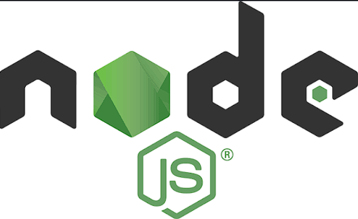
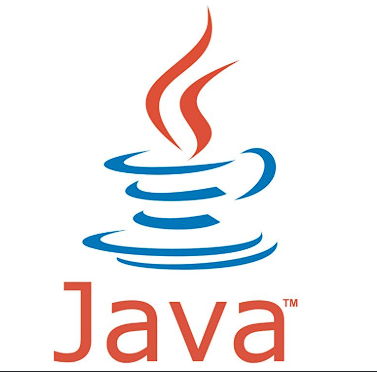
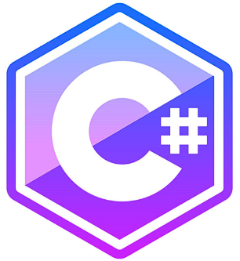
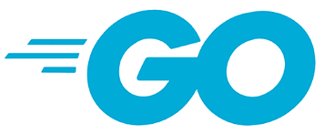
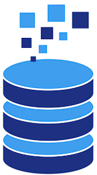

¿Qué es el Backend?El Backend es la parte de una aplicación que el usuario NO ve directamente. Es todo lo que ocurre en el servidor: la lógica de negocio, el acceso a la base de datos, la autenticación de usuarios, el procesamiento de datos y la seguridad. Se le conoce como "el lado del servidor" porque su código se ejecuta en un servidor remoto (físico o en la nube), nunca en el navegador del usuario. Su objetivo principal es que el frontend pueda funcionar: recibir peticiones, procesarlas y devolver respuestas. ¿Desde qué año existe?
Características principales
Dato clave: el backend trabaja en conjunto con
el frontend. El frontend pide, el backend responde. Juntos forman el modelo
Cliente-Servidor.
|
Existen varios lenguajes para programar del lado del servidor. Estos son los más usados:
| Node.js (JavaScript) | |
|---|---|
|
 |
|
| Año 2009 |
Permite ejecutar JavaScript en el servidor. Es asíncrono y
muy rápido, ideal para aplicaciones en tiempo real (chats, streaming).
Frameworks: Express, NestJS, Fastify. |
| Python | |

|
|
| Año 1991 |
Lenguaje versátil y fácil de leer. Muy usado en ciencia de datos,
inteligencia artificial y desarrollo web.
Frameworks: Django, Flask, FastAPI. |
| PHP | |

|
|
| Año 1995 |
Lenguaje clásico del backend. Alimenta el 75% de los sitios web
del mundo (WordPress, Wikipedia).
Frameworks: Laravel, Symfony, CodeIgniter. |
| Java | |
|
 |
|
| Año 1995 |
Lenguaje robusto y multiplataforma. Muy usado en banca y empresas
grandes por su seguridad y rendimiento.
Frameworks: Spring Boot, Quarkus. |
| C# (.NET) | |
|
 |
|
| Año 2000 |
Lenguaje de Microsoft, parte del ecosistema .NET. Muy usado en
aplicaciones empresariales y videojuegos con Unity.
Frameworks: ASP.NET Core, Blazor. |
| Go (Golang) | |
|
 |
|
| Año 2009 |
Creado por Google. Es rápido, simple y eficiente. Ideal para
microservicios y sistemas de alta concurrencia.
Frameworks: Gin, Echo, Fiber. |
| Bases de Datos | |
|
 |
|
| 1970-actualidad |
El backend necesita guardar datos. Estas son las más usadas:
Regla de oro: aprende primero SQL y una base de
datos relacional antes de saltar a NoSQL.
|
Este servidor recibe una petición y responde con datos JSON:
// servidor.js - Backend con Node.js + Express
const express = require('express');
const app = express();
const PORT = 3000;
// Middleware para leer JSON
app.use(express.json());
// Ruta raíz
app.get('/', (req, res) => {
res.send('¡Hola desde el Backend! ');
});
// Ruta que devuelve una lista de usuarios (simula base de datos)
app.get('/api/usuarios', (req, res) => {
const usuarios = [
{ id: 1, nombre: 'Yensy', rol: 'Frontend' },
{ id: 2, nombre: 'Melany', rol: 'Backend' },
{ id: 3, nombre: 'Carlos', rol: 'Full Stack' }
];
res.json(usuarios);
});
// Ruta POST para crear un usuario
app.post('/api/usuarios', (req, res) => {
const nuevoUsuario = req.body;
console.log('Usuario recibido:', nuevoUsuario);
res.status(201).json({
mensaje: 'Usuario creado',
usuario: nuevoUsuario
});
});
// Iniciar servidor
app.listen(PORT, () => {
console.log(`Servidor corriendo en http://localhost:${PORT}`);
});Esta simulación imita lo que devolvería el servidor al pedir
/api/usuarios:
npm init -ynpm install expressservidor.jsnode servidor.jshttp://localhost:3000/api/usuariosfetch('http://localhost:3000/api/usuarios') y mostrar los datos en pantalla.
¡Eso es exactamente el modelo petición-respuesta en acción!